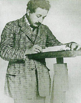

Один из величайших физиков-теоретиков ХХ века. Родился в Ульме, Германия; жил и работал в Германии, Швейцарии и США. Сын владельца маленького электрохимического заводика в Мюнхене; в этом городе и началось его формальное образование. После того, как семейный бизнес пришел в полный упадок, семья Эйнштейнов перебралась в Италию, а юный Альберт отправился в Цюрих (Швейцария), где и продолжил формальное образование. (Тут самое время развенчать устойчивый миф о том, что в юности Эйнштейн был нерадивым студентом и даже получал двойки по математике. С учебой у Эйнштейна проблем не возникало, зато он имел массу дисциплинарных взысканий, однако проблемы с администрацией закостенелой в те годы германской системы образования возникали у многих студентов, отличавшихся свободомыслием.)
В 1901 году Эйнштейн устроился на работу в Швейцарское патентное бюро в Берне и в том же году получил швейцарское гражданство по причине острого недовольства жестким и милитаризированным режимом, воцарившимся в Германии. За семь лет, проведенных на этой должности, он и внес свой основной вклад в науку, включая теоретическое объяснение фотоэлектрического эффекта и броуновского движения и специальную теорию относительности. В 1909 году, получив признание в академических кругах, стал профессором Цюрихского, затем Пражского университетов и, наконец, возглавил Институт физики им. Кайзера Вильгельма в Берлине. Ранний брак с однокурсницей Милевой Марич (Mileva Maric) сложился неудачно; в 1919 году Эйнштейн развелся со своей первой женой и вскоре женился на своей кузине Эльзе.